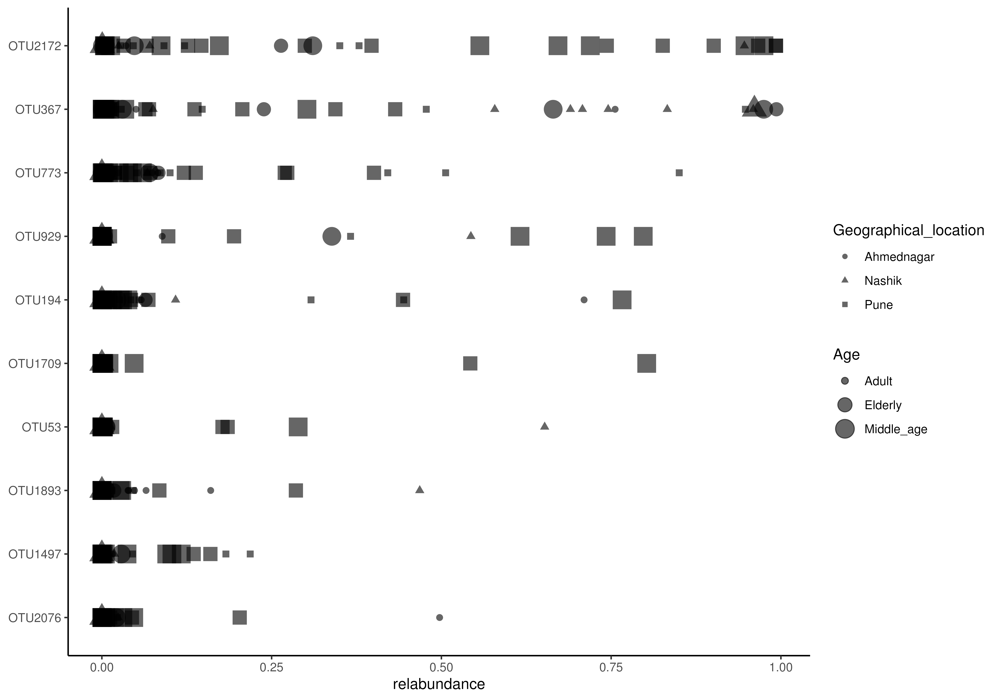

Plot abundance density
plotAbundanceDensity.RdThis function plots abundance of the most abundant taxa.
plotAbundanceDensity(object, ...) # S4 method for SummarizedExperiment plotAbundanceDensity( object, layout = c("jitter", "density", "point"), abund_values = "counts", n = 25, colour_by = NULL, shape_by = NULL, size_by = NULL, ... )
Arguments
| object | a
|
|---|---|
| ... | additional parameters for plotting.
See |
| layout | a single character value for selecting the layout of the plot.
There are three different options: |
| abund_values | a single character value for selecting the
|
| n | a positive integer specifying the number of the most abundant taxa to show.
(default: |
| colour_by | a single character value defining a column from |
| shape_by | a single character value defining a column from |
| size_by | a single character value defining a column from |
Value
A ggplot2 object
Details
This function plots abundance of the most abundant taxa. Abundance can be plotted as a jitter plot, a density plot, or a point plot. By default, x-axis represents abundance and y-axis taxa. In a jitter and point plot, each point represents abundance of individual taxa in individual sample. Most common abundances are shown as a higher density.
A density plot can be seen as a smoothened bar plot. It visualized distribution of abundances where peaks represent most common abundances.
Author
Leo Lahti and Tuomas Borman. Contact: microbiome.github.io
Examples
#>#>#>#>#>#>#># Plots the abundances of 25 most abundant taxa. Jitter plot is the default option. plotAbundanceDensity(tse, abund_values = "counts")# Counts relative abundances tse <- transformSamples(tse, method = "relabundance") # Plots the relative abundance of 10 most abundant taxa. # "nationality" information is used to color the points. X-axis is log-scaled. plotAbundanceDensity(tse, layout = "jitter", abund_values = "relabundance", n = 10, colour_by = "nationality") + scale_x_log10()# Plots the relative abundance of 10 most abundant taxa as a density plot. # X-axis is log-scaled plotAbundanceDensity(tse, layout = "density", abund_values = "relabundance", n = 10 ) + scale_x_log10()# Plots the relative abundance of 10 most abundant taxa as a point plot. # Point shape is changed from default (21) to 41. plotAbundanceDensity(tse, layout = "point", abund_values = "relabundance", n = 10, point_shape = 41)# Plots the relative abundance of 10 most abundant taxa as a point plot. # In addition to colour, groups can be visualized by size and sahep in point plots. plotAbundanceDensity(tse, layout = "point", abund_values = "relabundance", n = 10, shape_by = "sex", size_by = "time")#> Warning: Removed 370 rows containing missing values (geom_point).